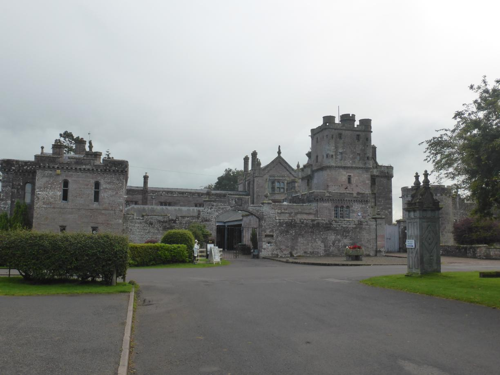

Auld Lang Syne Posted on September 14, 2017
Mein Laptop hat irgendwann während der letzten Tage in England wohl den Geist aufgegeben. Inzwischen bin ich wieder zu Hause angekommen und kann endlich die letzten Tage der Reise nachliefern.
Tag 37
Borve - Tyndrum 60 km
Da es nur eine einzige Fähre pro Tag zum Festland gibt, mussten wir sehr früh aufstehen. Um kurz nach 7 hatten wir alles gepackt und standen an der Fähre. Natürlich hatten wir noch mehr als genug Zeit. Aber die einzige Fähre des Tages wollten wir nicht verpassen. Von der Fähre hatten wir einen schönen Blick auf Castlebay und die Burg. Gegen Mittag kamen wir in Oban an. Dort hieß es es dann Abschied nehmen von Tim und Sean. In Oban konnte ich dann auch endlich eine neue Luftpumpe erstehen. Aus Oban raus ging es dann wieder in die Highlands.
Tag 38
Tyndrum - Bridge of Weir 99 km
Von Tyndrum aus ging es Richtung Süden und später am Loch Lomond endlang. Das Wetter war sehr durchwachsen und am Loch fiel mir zudem auf, dass ich mein Fahrradschloss verloren hatte. Kurz vor Glasgow fand ich in einem Fahrradladen Ersatz. Ich fand zudem heraus warum Glaswegians sogar für andere Schotten schwer zu verstehen sind :).
Tag 39
Bridge of Weir - Rigside 84 km
Das Wetter hatte sich zum Vortag sogar noch verschlechtert. Die meiste Zeit fuhr ich durch Nieselregen. Das Wetter fing an mir ein wenig auf die Stimmung zu vermiesen.
Tag 40
Rigside - Ecclefechan 85 km
Auch am nächsten Tag war das Wetter zunächst kaum besser. Immerhin konnte ich in einer Regenpause die Bildung eines Regenbogens beobachten. Am Nachmittag traf ich kurz vor Ecclefechan dann auf Chris, der von John O’Groats auf dem Weg nach Lands End war. Wir waren beide gerade auf der Suche nach einem Platz zum Zelten und fanden in der Nähe von Ecclefechan einen Campingplatz direkt an einer Burg. Wir tauschten und noch länger über unsere Reisererfahrungen und Pläne für zunkünftige Reisen aus. Der Regen hatte auch aufgehört, so dass meine Stimmung deutlich besser war, als am Tag zuvor.
Tag 41
Ecclefechan - Brampton 102 km
 In der Nacht spürte ich dann erstmals die Auswirkungen des kalt nassen Wetters. Am morgen war ich dann richtig erkältet. Aber meine Fähre hatte ich bereits gebucht und deshalb musste ich am 11. in Newcastle sein. Ich konnte mir also keinen Ruhetag leisten.
Bis Carlisle mussten Chris und ich sogar in die selbe Richtung. Das Wetter war bis auf ein paar Schauer auch ganz gut.
An der englischen Grenze wollte Chris unbedingt ein Foto von sich und dem Länderschild machen. Leider gab es dort kein Schild. Ein Foto haben wir trotzdem gemacht.
Tag 42
Brampton - Wylan 72 km
Am nächsten Tag ging es entlang von Hadrians Wall Richtung Newcastle. Unterwegs gab es auch ein paar Anstiege, die ich leider wegen der andauernden Erkältung nicht genießen konnte.
Tag 43
Wylan - North Shields 33 km
Bis zur Fähre war es nicht mehr weit. Am Fährterminal angekommen konnte ich sogar direkt auf das Schiff. Meine Kabine befand sich ganz unten, sogar noch unterhalb des Fahrzeugdecks. Dort gab es weder Mobilfunk noch WLAN. Dafür aber jede menge Ruhe.
Tag 44
IJmuiden (NL) - Arnhem 124 km
Ausgeruht rollte ich am nächsten Morgen von der Fähre. Nachdem ich mich wieder an den Rechtsverkehr gewöhnt hatte rollte ich mit Rückenwind nach Amsterdam. Am Campingplatz in Arnhem fiel mir dann auf, dass ich gar kein Foto von einer roten Telefonzelle gemacht hatte.
Kein Problem.
Tag 45
Arnhem - Solingen (DE) 162 km
Am nächsten Tag hatte ich mir vorgenommen die letzten ca. 150km zu fahren. Also ging es um kurz nach 8 in Arnhem los.
Am Morgen war es sehr stürmisch und regnerisch. Später war es dann nur noch stürmisch.
Am Rhein musste ich feststellen, dass die Fähre, die ich laut Navi nehmen sollte, im September nur noch an Wochenenden verkehrt. Die Alternativroute war dann noch 5 bis 10 km länger.
An der Grenze zu Deutschland gab es wieder kein Schild.
Um kurz vor 8 kam ich dann total kaputt zu Hause an.